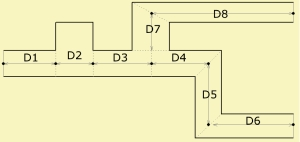
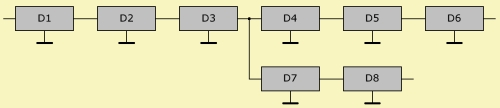
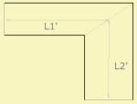
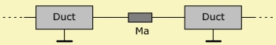

| Identifier | Len= | |
| Units | m | |
| Format | Floating point number | |
| Purpose | Length of waveguide | |
| Used in | Duct, Waveguide | |
Len= specifies the effective length of the Duct or Waveguide component.
If you use ducts for modeling loudspeaker cabinets make sure that the total volume is maintained. The volume of air inside the duct is
V = SD·Len
with SD the cross section of the duct, which is to be assumed constant along the length of the duct.
The entry for Len= should include end corrections.
With the help of an end-correction one takes into account the acoustic mass at the vents. This mass is caused by transitions, for example if two Duct-components with different cross-section are coupled.
If the duct is connected to a RadImp-component then there is no end correction necessary. This is so because RadImp is already providing the correct radiation-impedance.
Instead of adding an AcouMass one also can extend the Len= parameter:
L' = 0.425·dD Vent terminates in a baffle
L' = 0.306·dD Vent terminates un-flanged
L' is added to the geometrical length of the vent.
The above formulae assume a "strong" transition, such as at the vent to an infinite baffle. Also we assume that the wavelength is larger than the aperture. In other cases one may adjust the above values for L', apply values as given in chapter for the acoustic mass Ma= or use the Boundary Element Method for this section.


Multiple ducts can be cascaded and split. At a connection there should be the same sound pressure and the same velocity, at least approximately. In this example no end-correction is applied.


A bend induces an acoustic mass as explained in chapter Ma=.